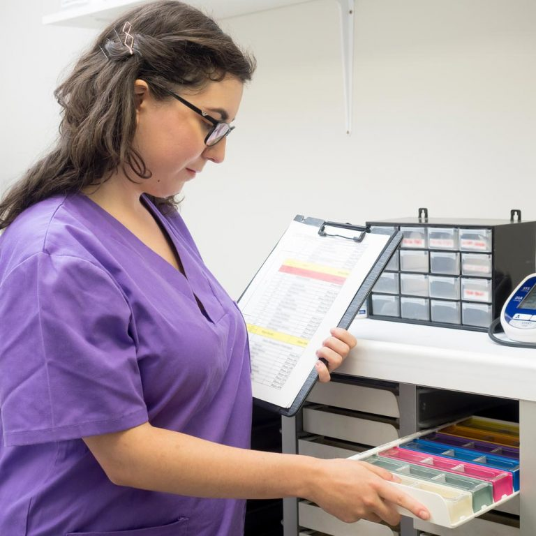
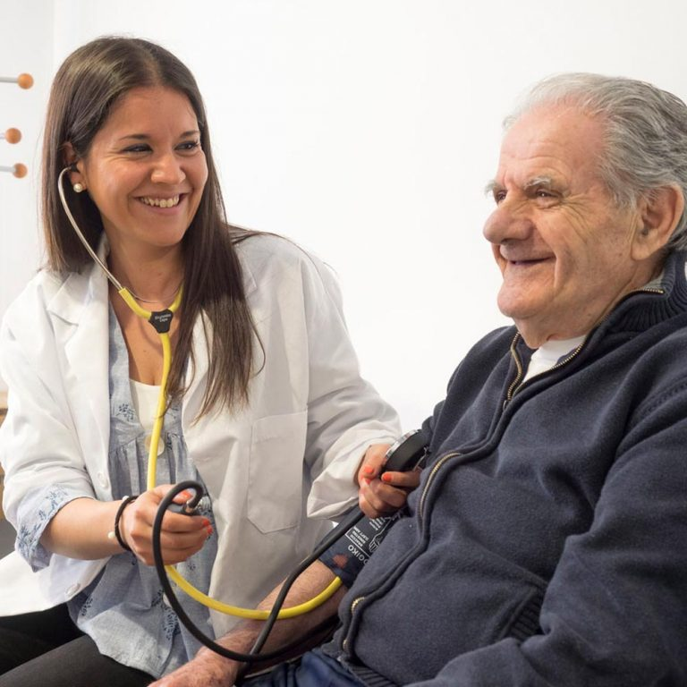

Para cuidar de tu bienestar, cuidamos también de tu salud. Y lo hacemos desde el contacto directo con las familias y el conocimiento de las singularidades de la salud de cada persona residente. Disponemos en la residencia de profesionales de diferentes ámbitos sanitarios y nos coordinamos con tus especialistas y médicos de cabecera, garantizando así el seguimiento de las prescripciones particulares en materia de medicamentos y salud. Velamos por tu calidad de vida desde una triple vertiente: Mantenimiento de las capacidades y de la autonomía en las actividades de la vida diaria (AVD). Cuidado de la salud, haciendo un seguimiento de las prescripciones facultativas y con unos hábitos de vida saludables. Recuperación de la salud, mediante la atención directa y el acompañamiento de nuestros profesionales.

